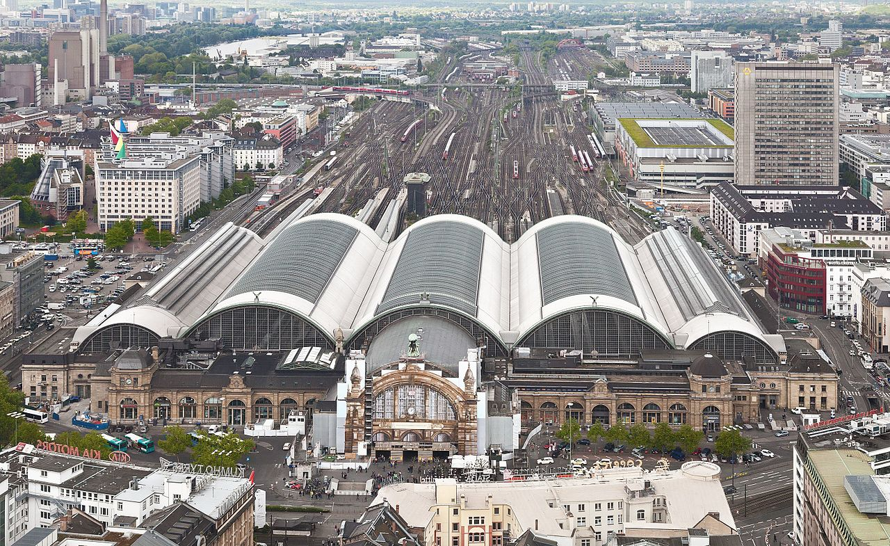
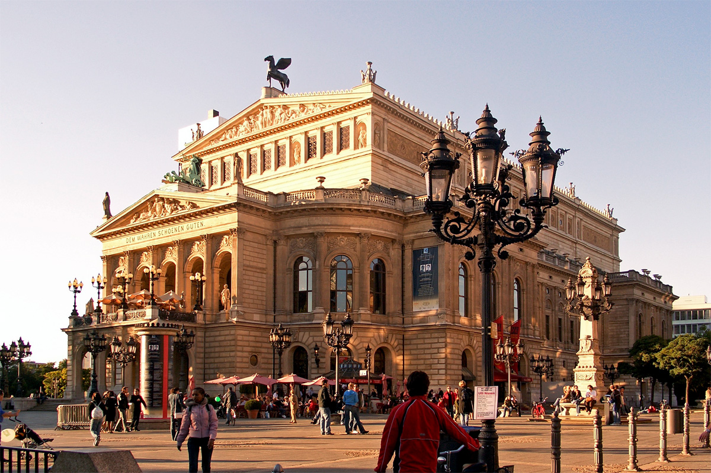
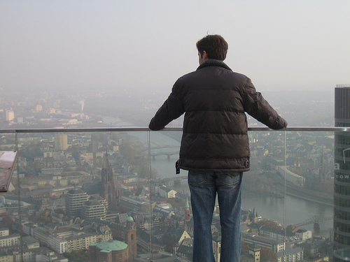
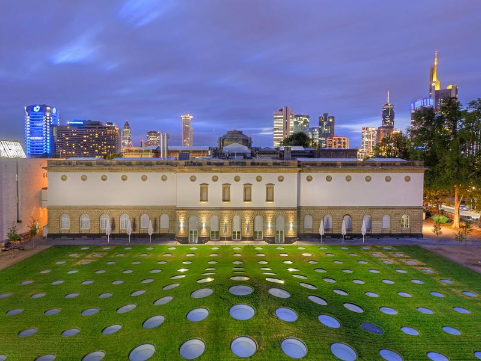
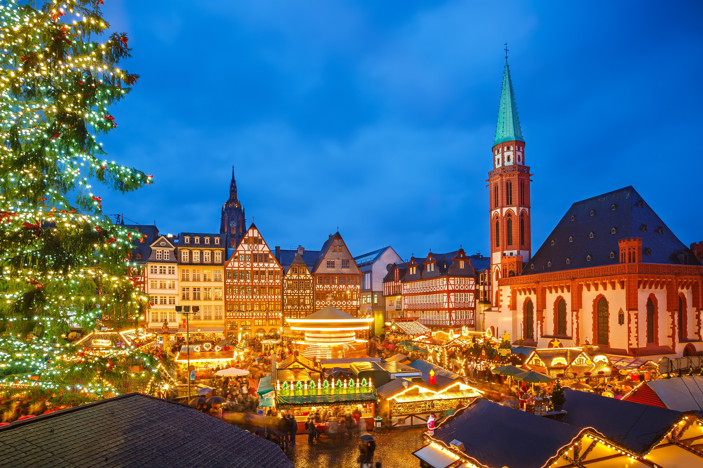
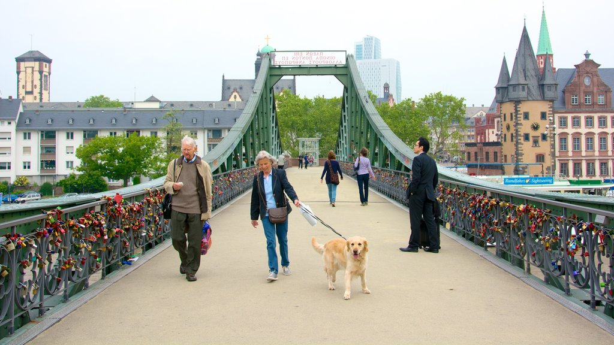
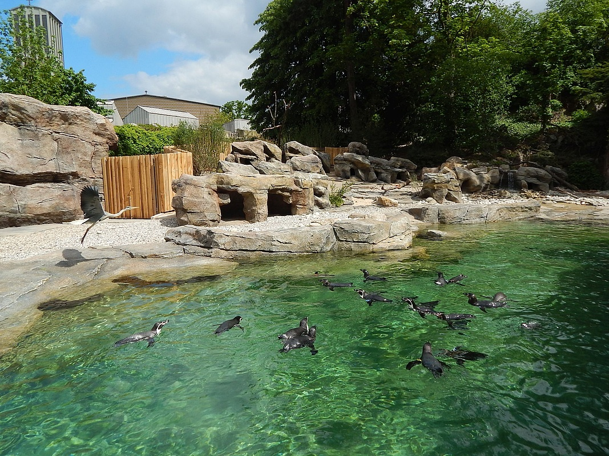

Haz click en la actividad que quieras ver.
Frankfurt Hauptbahnhof.La Estación Central de Frankfurt es la mayor estación de ferrocarril de Frankfurt am Main y una de las principales de Alemania. Constituye un nudo de comunicaciones de la ciudad, tanto con la red del U-Bahn y S-Bahn. Con 350.000 viajeros por día y 130 millones de viajeros cada año, es una de las estaciones de ferrocarril más grandes de Alemania y de Europa. Volver |
 |
Die alte Oper.La Alte Oper (Ópera Antigua) es una sala de conciertos y antiguo teatro de ópera de Fráncfort del Meno, Alemania. Prácticamente destruida durante los bombardeos de la Segunda Guerra Mundial en 1944, sus ruinas estuvieron a punto de desaparecer y ser reemplazadas por un edificio moderno. En el año 1965 el alcalde Rudi Arndt sugirió, volar el edificio "con un poco de dinamita", y así consiguió su apodo de "Dinamita Rudi". Arndt insistió más tarde que nunca había propuesto seriamente una voladura. Una campaña de los ciudadanos la salvó y la reconstrucción comenzó en 1976. Fue reabierta en 1981 con la Octava Sinfonía de Gustav Mahler dirigida por Michael Gielen. Volver |
 |
MAIN TOWER.La Main Tower es un rascacielos en el centro de la ciudad de Frankfurt am Main . Fue inaugurado el 28 de enero de 2000. Con una altura de 200 metros (con mástil: 240 metros), es junto con la Torre 185 el cuarto rascacielos más alto de Alemania, es especialmente atractivo ya que cuenta con un observador en la terraza desde donde se ve toda la ciudad. Volver |
 |
Museumufer.La Orilla de los Museos (en alemán, Museumsufer) en Fráncfort del Meno constituye una de las zonas museísticas más significativas de Alemania y Europa. En las dos riberas del Meno se pueden encontrar 15 museos de primer nivel. Volver |
 |
Romerberg.El Römerberg es la plaza del ayuntamiento de Frankfurt am Main y ha sido el centro del casco antiguo desde la Alta Edad Media . El nombre proviene de la casa Zum Römer , que ha sido el ayuntamiento de Frankfurt desde el siglo XV. Desde entonces, la plaza ha sido escenario de numerosos eventos, por ejemplo, las coronaciones de los emperadores , las ferias comerciales de Frankfurt y el mercado navideño de Frankfurt . Volver |
 |
Eiserner Steg.El Eiserner Steg es un puente peatonal sobre el Main en Frankfurt, que existe desde 1868. Después de la demolición en los últimos días de la Segunda Guerra Mundial , se reconstruyó sin cambios en 1946. Al igual que en otros puentes del mundo las parejas van a este sitio para colocar un candado en simbolo de su amor. Volver |
 |
Zoo Frankfurt.El Zoológico de Frankfurt fue inaugurado en Frankfurt am Main en 1858 y es el segundo zoológico más antiguo de Alemania después del Jardín Zoológico de Berlín. Volver |
 |